IV семестр, или о том, как я начал сходить с ума
Возможно, это были самые насыщенные полгода жизни. Я постараюсь захватить период с января по июнь включительно. В июле уже тоже было так много всего, что хватит на отдельный пост. Я до сих пор считаю, что самое счастливое время в моей жизни — мой 10 класс, но эти полгода могут посоревноваться. На этот раз я начну с вещей, которыми я успел позаниматься за эти полгода.
Скучное
Учеба
В какой-то момент я понял, что в теории могу заниматься почти любой технической наукой. Более того, я понял, что мне это интересно, и по этой причине у меня очень сильно вырос бэклог задач. Постараюсь описать по пунктам вещи, которыми я занимался за эти полгода.
-
Курс Липовского по распределенным системам (лекции с лектория ФПМИ). Посмотрел его на 2/3 и очень сильно преисполнился. Да, я дилетант, я не делал домашки, но тем не менее мне этот курс дал очень много. Наверное, главное представление, которое надо вынести из этого курса, — что любая распределенная отказоустойчивая база данных будет под капотом выглядеть как ChangeLog изменений, где каждая ячейка выбирается под консенсусом.
В начале января у меня были почти три недели времени, когда я мог не работать (праздники + перенос отпуска). При этом я понимал, что я вообще не умею дизайнить никакие системы, а чтобы расти как разработчику, мне требуется уметь дизайнить архитектуру проектов. Сейчас, из июля 2026 года, у меня уже есть понимание, что большинство продуктовых проектов будут собираться из готовых кубиков в виде разных баз данных, планировщиков задач, etc. Базы данных тоже бывают разными и все такое, но это сейчас неважно. Всегда нужна какая-то входная точка, которая объяснит «а почему так» и даст первичное понимание о том, какие могут быть проблемы и как их решать.
Мне кажется, что если ты хочешь использовать какие-то кубики, то должен иметь хотя бы какое-то представление о внутреннем устройстве, чтобы понимать правильный профиль нагрузки и как это правильно использовать. На работе очень массово мы используем, например, yt. Но (во всяком случае, в sdg) хуй вам кто будет пояснять и проводить семинары, что это за зверь и как им правильно пользоваться. В итоге в реальности мало кто доходит до того, чтобы реально сесть и разобраться, как этим правильно пользоваться, и последствия печальные.
-
Матан-2 и теорвер из третьего семестра. А также 3 модуль теорвера. У меня оставались недосмотренные лекции, и мне надо было их досмотреть. Этим я тоже занимался в январе, немного проникся рядами Фурье из матана. Не знаю, насколько это в итоге оказалось полезно, но теорвер в любом случае надо было продолжать ботать.
Последние темы из теорвера я, честно говоря, осознал не очень хорошо. В какой-то момент он превратился из красивой науки в какую-то дрочь типов сходимости (по вероятности, по распределению, почти наверное) и стало неприятно. Теорвер в итоге сдал на четверку и бог с ним.
-
Введение в финансы на лектории ФПМИ. Меня помимо всего прочего заинтересовала экономика. Поэтому сколько-то часов я потратил на то, чтобы посмотреть этот курс. Посмотрел я его не полностью, а где-то тоже на 2/3. Мне стало немного тяжело из-за того факта, что записи некоторых лекций отсутствовали, и поэтому я посмотрел только до 9 лекции вроде бы.
В целом прикольно, дало понимание, что на рынке можно делать любую грязь, которая придет в голову. Можно торговать акциями/облигациями. Можно торговать акциями/облигациями, которых у тебя на самом деле нет, чтобы играть на понижение. Можно страховать акции, чтобы играть на понижение и т.д. Можно торговать чужими долгами. Короче много разной грязюки делать можно и люди реально делают.
-
Курсач по 3d рендереру с нуля от Димы Трушина. Я начал заниматься им еще во время своих зимних каникул. Основную часть я затем сделал где-то в марте или апреле (получил какую-то генерацию картинки и какие-то тени). Затем зарефакторил до нормального вида за какое-то время до защиты.
Дало понимание того, как базово могут быть устроены отрисовщики обычных приложений и отдаленное понимание того, как могут быть устроены настоящие 3d движки. Понимание отдаленное, потому что я не использовал никаких вычислительных ускорителей, а только однопоточные cpu вычисления. Зато понял, что магии в тенях нет. Самые базовые тени делаются буквально как отрисовка на еще один экран (карта теней называется метод). Во вторичных тенях тоже никакой магии нет, это трассировка лучей. Здесь, конечно, может быть неясно, как такое делать быстро. Секрет в том, что модельки в играх лежат в специальном формате, чтобы пересечения луча с моделькой можно было очень быстро найти буквальным спуском по аналогии с двоичным деревом.
Код: github.com/salmpac/3d_renderer
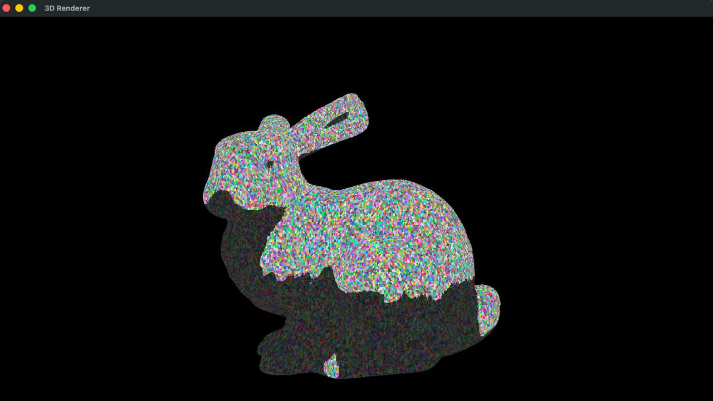
-
Курс ОМВ от Рахубы. Это было прикольное дерьмо. Этот курс очень хорошо дополнил линал с первого курса и дал какую-то интуицию про матрицы. Он также дал какой-то аппарат, чтобы что-то понимать про матричные функции (сходимость, дифференцирование и т.д.). Он из моей жизни пока еще не ушел, потому что мне еще писать экзамен в сентябре.
На пересдачу я ушел по двум причинам: не хотел пушить себя и словить психоз и хотел получше разобраться во второй половине курса. В теории мог бы заботать на минимальный порог (экзамен блокирующий), но этот спидран мало бы плодов дал, а я мог позволить себе уйти на пересдачу.
-
Функан от Матвея Смирнова. Очень прикольный курс, который я даже закрыл на 8/10, но по одной простой причине: можно было получить автомат, освоив первую половину курса. Поэтому после того как я заботал колоквиум (получил 6/10, кстати) и не очень плохо написал контрольную, у меня уже выходила хорошая оценка. Достаточно сильно мне расшатал мозги, я хочу когда-нибудь дослушать оставшуюся половину этого курса (она вообще по идее должна сводить с ума спектральными операторами).
-
Матстат (1 модуль). Усвоил его откровенно плохо, подача лектора была посредственной (по сравнению с функаном и ОМВ). Но я написал один очный элемент контроля и закрылся, так что что-то вынес.
-
Лекции ШАД, которые доступны сотрудникам Яндекса. Для общей осведомленности и из интереса начинал смотреть какие-то курсы (к каждому из которых мне хотелось бы когда-нибудь вернуться). Я почти полностью посмотрел курс по Go (чтобы лучше понимать код коллег, сам я код почти не пишу на go, да и в принципе...). Наверное, дальше всего помимо этого я продвинулся по курсу по CUDA, но и то это получилось меньше половины курса. Но в общем тут довольно много набежало, так что можно в отдельный пункт выделить. Сюда, в частности, входят некоторые материалы курса Липовского по конкурам, которые я не освоил при первом подходе.
-
Комплы и Дискра 2. Я решил, что хочу ботать математику, потому что да... Потому что уже почувствовал после 1 года обучения, насколько я стал умнее от нее. В итоге решил, что всю субботу я буду тратить на то, чтобы посетить 2 лекции и 2 семинара по этим предметам. Более того, я начал их еще и записывать и выкладывать записи.
На Дискру я отходил суммарно где-то месяц, на курс по комплам я отходил где-то на половину. Я начал дропать, потому что мне было тяжело проходить 5 математических курсов одновременно и работать 40 часов на работе. Основная трудность в этом всем была переключаться между контекстами. Чтобы нормально проходить курс по математике, тебе желательно надо держать в голове какой-то длинный суффикс лекций, а у меня не хватало места держать материал 5 математических курсов и работы. Времени тоже не хватало, если честно.
-
АКОС2. У меня были большие ожидания от этого курса, которые во многом оправдались. Игорь покрыл много тем, каждую из них можно было самостоятельно пойти раскапывать потом. Домашки тоже были интересными. Качественнее всего я, наверное, разобрался в sse/avx2. Также было полезным покопаться в коде реальной игрушечной ОС Яблоко. Остальные бдз я тоже сделал (кроме игры turing complete, ее я когда-нибудь пройду, надеюсь), но они overall были не такими же интересными (либо я уже знал материал как было с корутинами). Конечно, из-за всего вышеперечисленного, я не смог вынести максимум пользы из этого курса, но какую-то пользу вынес. Получил 10. Спасибо Игорю Минееву за курс!
-
Курс justice: what is the right thing to do? С введением в философию (с направлением в политическую философию). Я на самом деле по большому счету посмотрел типа 3 или 4 лекции, НО! сделал это так, как делают меньше процента людей, которые смотрели этот курс. Я реально шел читать книги, которые мне говорил читать Gemini и писал по ним конспекты/эссе. У меня где-то месяц заняло чтение и осмысление одной главы книги Роберта Нозика: «Анархия, государство и утопия». Получился такой большой конспект с моими мыслями на 69 килобайт текста. Справедливости ради, там эта глава занимает четверть книги, так что пусть вас слово «глава» не смущает. Там, кстати, интересный репозиторий вообще, но тише-тише. После этого я пока выдохся, но скоро продолжу писать похожий конспект на второй трактат о правлении Джона Локка.
Работа
Ох уж эта злоебучая работа. Я вышел на ставку 40 часов вместо 30. Я начинал год с очень большими амбициями сделать много крутых штук на работе. В итоге получилось совсем не так и непонятно, почему так вышло. Я не могу для себя ответить на вопрос: «а что мне надо было делать по-другому, чтобы вышло лучше?».
То есть да, много сил не на работу уходило, но и на работе как-то скорее пришлось заниматься не какими-то крутыми задачами, а пилить adhoc решения проблем или идти дожимать релизы, в которых что-то падало на тестинге.
Недавно, например, общались с человеком, который отвечает за какой-то execution кода на машине в целом, который мне прямо проговорил фразу «да похуй на перформанс кода». Благодарю. Ему-то, может, и похуй, а потом появляются боли и команды, которые должны эти боли лечить (как моя, например). Но мне кажется, что не работает так, когда одним похуй, другим резко не похуй.
В угоду быстрым решениям на старте закладывается куча проблем. Я так понимаю, что это боли вообще очень многих крупных компаний, об этом даже говорил Роман Липовский в каких-то лекциях. Он говорил касательно других вещей, но с тем же смыслом: «Вкладываться в тестовую инфраструктуру на старте дорого и поэтому так почти никто так не делает». Поэтому потом либо никто не осмеливается лезть в то, что уже работает, либо неожиданно что-то где-то начинает отстреливать после изменений (либо система изначально с ошибками написана вообще, просто которые стреляют раз в 100 тысяч раз).
Это все, что я хочу написать непосредственно о работе.
Жизнь
Как все начиналось
Вставлю сюда то, о чем я не написал в посте про 3 семестр, но о чем хотелось бы упомянуть: я справился за несколько месяцев похудеть с пика 107 килограмм до нижнего пика 92 килограмма. Сейчас я вешу 95-96 и справляюсь не набирать. На момент июля 2026 мне бы хотелось попробовать сбросить еще сильнее (чтобы уложиться в норму 15-16 процентов жира, вместо 20-21), я сейчас пробую отказываться от потребления сладкого. Я себя не хочу слишком сильно с этим пушить, стратегия не есть совсем после 18 часов и просто не нажраться плюс-минус работает (хотя в моменте я начал переедать даже до 18, но взял это под контроль).
Где-то до весны я жил и держался режима работа-учеба-дом-(иногда в зал). Суббота и воскресенье были свободными от работы днями. Вся суббота первые полтора месяца уходила на то, чтобы сходить на лекцию+семинар по дискретной математике 2 и на лекцию+семинар по комплексному анализу. Более того, я даже начал записывать эти лекции на youtube.
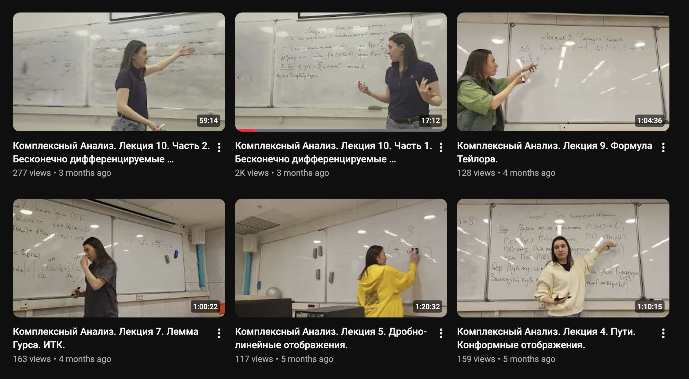
И это были курсы, на которые я ходил вольнослушателем, то есть у меня еще оставалось где-то 4 предмета, по которым тоже надо было смотреть лекции и делать домашки. И я старался делать это достаточно качественно, то есть даже если я клодоебил, я старался понимать решения, которые пишу.
Самое сложное в этом всем было переключаться между контекстами: чтобы нормально проходить предмет, хочется держать в голове весь контекст (из нескольких предыдущих лекций). В моей голове контекст для пяти математических предметов не умещался, и поэтому мне пришлось довольно болезненно его менять по несколько раз в неделю. В какой-то момент я начал сходить с ума и я даже не знаю, как это описать. Математика начала вытеснять человеческое в моем сознании.
Концерты. Часть 1
Я думал сделать пост линейным, но решил разбить по темам. Расскажу про интересную часть жизни, которая как-то давала мне разгрузку в течение семестра.
1) Лофт 15 января. Это не концерт в привычном понимании, это мероприятие, где мы собираемся с друзьями, чтобы побухать и послушать музыку. В частности, чтобы собраться всем вместе, потому что иначе я бы со многими людьми не виделся совсем (а жаль).
На следующий день после лофта (или через несколько дней) случился такой момент: я в моменте подумал, что я приставал к одной из девушек на этом лофте, и очень перепугался, что так могло произойти. Мне мой друг тогда написал с вопросом, чзх было. Я был просто очень сильно пьяный и вообще не помнил че было моментами. Хотя при этом я знаю про себя, что даже бухой не стал бы делать какую-то конченую хуйню.
Короче пошел выяснять, оказалось, что я просто катался на качеле в лофте и как-то странно решил за нее зацепиться ногами и потом оттолкнуться или что-то такое. Честно, я уже не помню мотивацию свою, но этот момент попал на серию кружков, которые я записывал и вроде все так было. Короче написал этой девушке, извинился, все кайф, никто не обижен. Держите видосик с лофта.
2) 18 января была Дурка — концерт с каким-то множеством исполнителей, которые мне нравились. В принципе все было кайф, Cupsize разъебал жестко. Фанаты Sqwore были ебаным быдлом (я не знаю почему).
Какие-то полторашки сказали, что я жирный уебок и во мне нет ничего человеческого, потому что я их не пропустил вперед. Я просто тоже очень хотел вперед, а такие полторашки всегда пользуются чужой жалостью, чтобы пройти. И как бы мне их тоже жаль, быть низким наверняка довольно грустно, но это не моя проблема и я не должен сам из-за этого получать меньше.
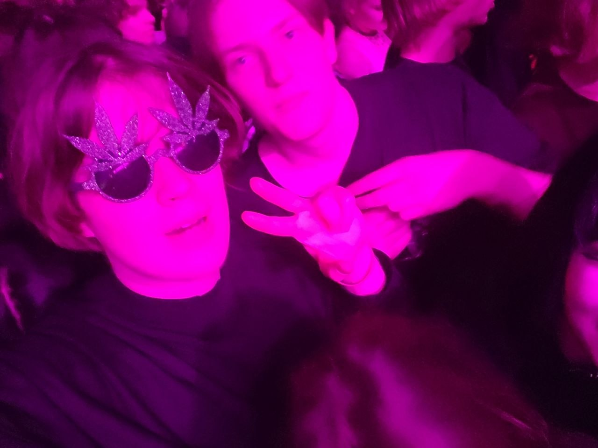
3) Лофт 6 февраля. Я там нахуячился жестко, конечно. Вспоминается история, как на одном из предыдущих лофтов (я уже не помню когда) я блевал у туалета, потом ко мне подошел другой мой друг и начал блевать со мной в тот же туалет (как мне рассказывали). Я был настолько невменяем, что моему другу Тимофею пришлось героически меня везти домой и вспоминать, где я живу (я был не в состоянии). Потом я два раза заплатил двум людям за одно и то же такси и там была куча очень смешных моментов про то, как я блевал.
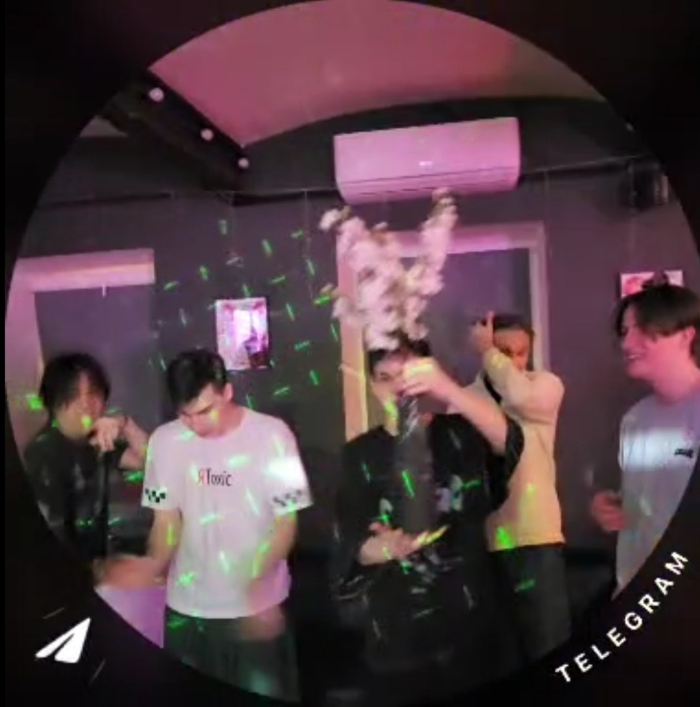
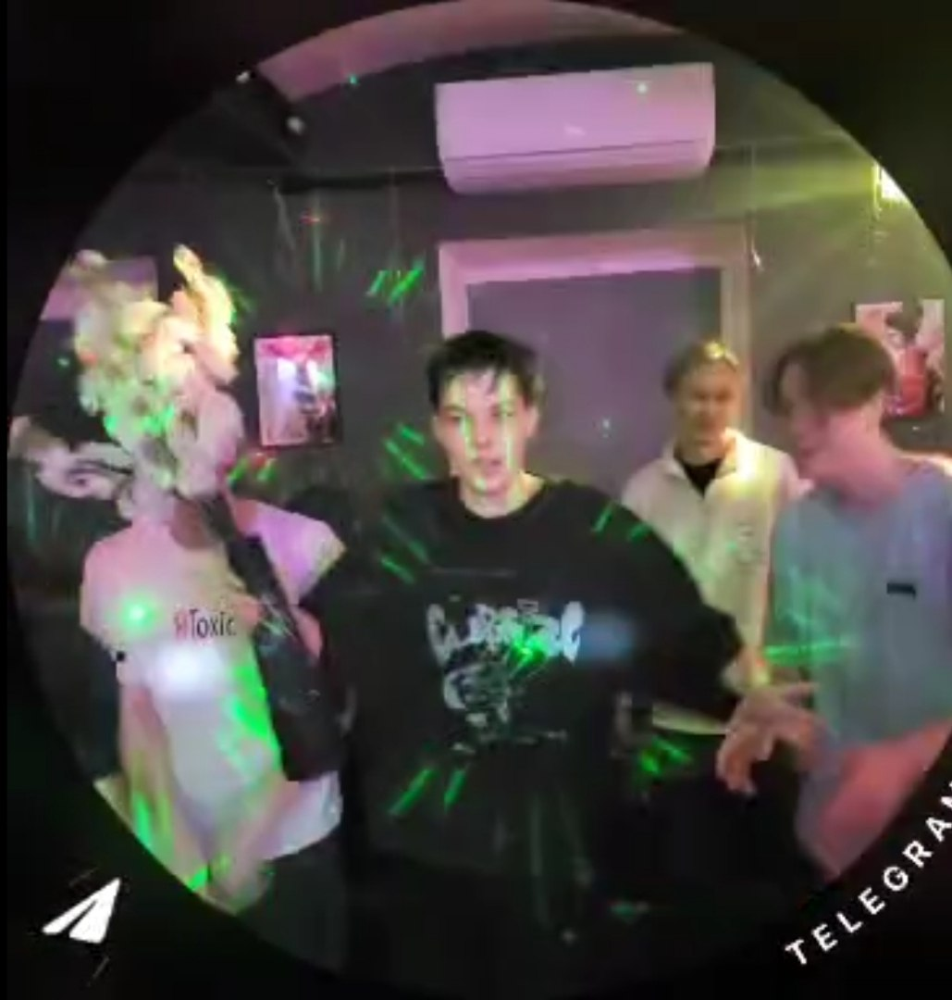
4) 8 февраля был на madk1d в Москве. Я был там с кем-то и у меня не осталось никаких фото. Поэтому пойдем дальше.
5) 10 февраля группа Cupsize Питер. Я поехал в Питер за одним из двух моих самых любимых исполнителей. Он тогда презентовал альбом неуравновешеннолетниепесни pt 1. Концерт был в клубе Ласточка и у меня был VIP билет. VIP билет, кстати, понадобился, потому что у чуваков закончилось место в гардеробе. Дропнуть куртку сверху мне было нестрашно, потому что на випках обычно приличный народ сидит. Жестко кайфанул, послэмился, поснимал видосиков.
6) 26 февраля группа Cupsize Москва. Там было прикольно, я должен был пойти с Тимофеем Ижицким, но тот не смог и мы пошли на концерт с его братом. Брат у Тимофея очень крут, пишет реп музыку и рассказал мне хороших историй по уровню не хуже моих школьных. Ссылки на его музыку не будет, может быть, прикреплю, если меня попросят и пришлют. На концерте я сфоткался с cupsize, хотя была возможность сесть и пообщаться, я решил слить возможность на фотку. Честно говоря, не жалею, фотка-то осталась, а спросить его я не знаю о чем все равно.
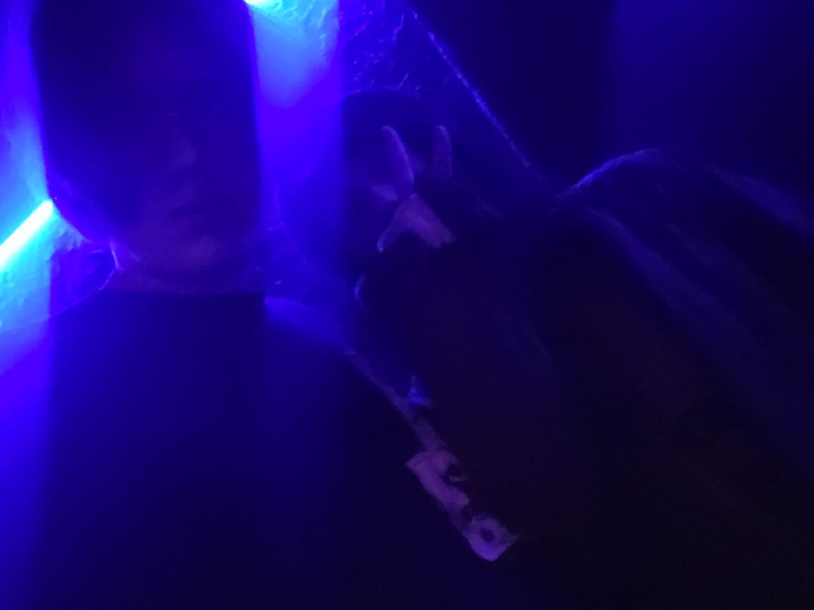
7) 22 марта Темный принц Москва. Ходил с прикольными ребятами туда, но уже не помню с кем. У девочки, которая была с нами, были очки, у меня с тех пор на стаффе в Яндексе фотка в этих очках.
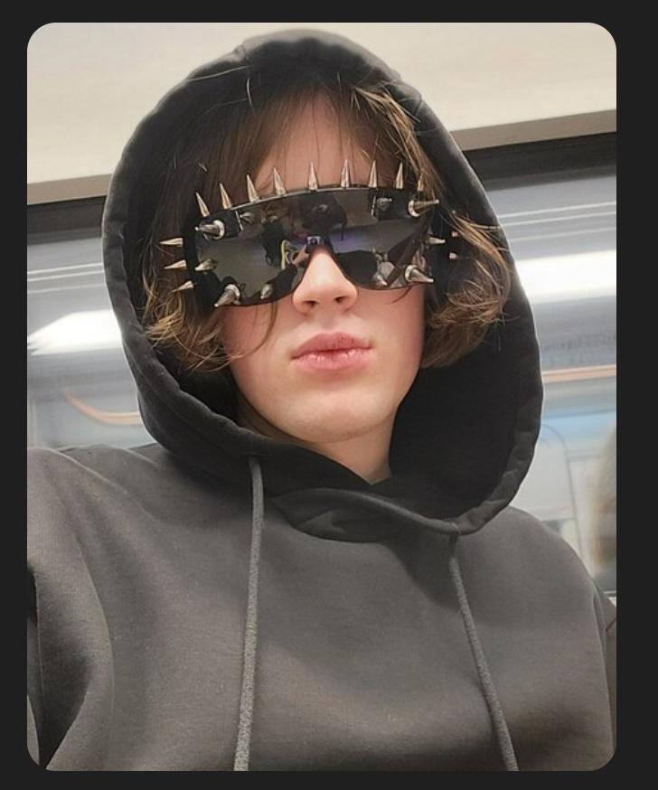
8) 5 апреля Бредишь Москва. Я пожалел, что сходил сюда. Концерт был в клубе Gipsy, в 5 минутах от моей работы. Не могу сказать, что я люблю этого исполнителя, а от него еще и быдловайбом веяло. Он вышел или под алкоголем, или под чем-то более сильным, ему было очень плохо. В какой-то момент вышел Кишлак и они повалялись с ним на полу. Интересных фото у меня тоже не осталось, сидим без фото. Тут тоже випка была, кстати, но очень уебищная: сцена была далеко.
Как все продолжалось. Часть 1
После того как я понял, что начал сходить с ума, я дропнул курс по дискретной математике. 9 февраля я написал в чат курса, что больше не буду ходить и вести записи. Через некоторое время я также понял, что ходить на семинары по комплам у меня тоже не выходит, и я продолжил ходить только на лекции.
В это время я хорошо почувствовал себя на работе: мне казалось, что при достаточном количестве усилий я смогу сделать почти любую задачу и поднять почти любой сервис. Это, скорее всего, так и есть, но мне тогда чего-то не хватало, чтобы идти и делать что-то грандиозное на работе.
Еще примерно в тот период был день рождения 57 школы (где-то в середине февраля). Я туда пришел, со всеми поздоровался, было забавно, как долго меня узнавала моя классная руководительница (скорее всего, она пыталась забыть меня как страшный сон). Пришел я туда, конечно, уже поздно, после пары по комплам в субботу.
Там я узнал, что у моей последней (и, между прочим, на момент написания до сих пор последней) девушки появился новый парень. Я испытал очень странный спектр эмоций. Расстались мы с ней в июне 2025 года (то бишь прошло уже больше, чем полгода). Я очень долго переживал расставание, хотя понимал головой, что так будет лучше. И я не понимаю, почему так долго, рабочая гипотеза такая: я очень много вложил моральных сил (возможно, Лиза не согласится, я не знаю) в то, чтобы это все продолжалось и токсичности было много в отношениях. И как будто пережитые отрицательные моменты меня сильно заставили держаться за моменты, когда все было нормально.
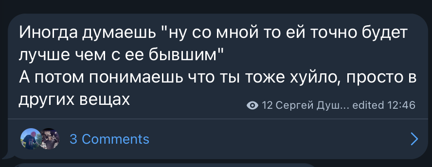
В тот день я понял, что еще не до конца пережил расставание. Это была не ревность, нет, я рад за молодых. Просто странное чувство было, что Лиза уже перешагнула это все, а я еще не совсем как будто. Тогда я наконец-то отпустил эту историю.
Клубы
Отпустил и пошел блядствовать. На тот момент я уже два раза был в борделях и понял, что это не стоящее денег дерьмо. Возможно, мне не повезло, конечно, но проверять я уже не хочу. Надо сказать, что в первый раз я побывал в таком месте из-за фетиша на проституток. Почему-то меня на тот момент возбуждала идея грязной девушки, в которой было уже много человек до меня.
Я слышал, что есть такое место, как клубы, где люди приходят и знакомятся, и в теории можно уехать с кем-то. Я слышал про «клуб клуб», как про очень забавное место. Надо сказать, что я уже пробовал сходить в клуб за несколько месяцев до этого (я тогда был чуть пьяный и, кажется, просто хотел сходить в ровесник). Меня туда не пустили и глобально понятно, почему: я еще не знал, как лучше проходить фейс-контроль и ответил на вопрос «как дела» с огромной задержкой.
Тогда я захотел пойти в «клуб клуб» с намерением познакомиться с кем-то. Я по хардкору решил пойти один, кое-как нашел это место. Это была ночь 20-21 февраля. На улице была зима, причем холодная зима (на улице в ту ночь было −7 градусов). В клуб клубе было много людей, и меня почему-то туда не пустили.
Если честно, я до сих пор не знаю, почему меня не пустили. Скорее всего, у них и так было много людей внутри и они разворачивали почти всех. В итоге единственное место в округе, в которое меня пустили, был Зензивер. Это бар рядом с клуб клубом, от тех же создателей и с тем же меню.
В Зензивере я в первый раз попробовал Ерш на сидре с настойкой и влюбился в этот напиток. Минус этого места — то, что это в первую очередь бар, так еще и с очень слабым фейс-контролем (туда пускают реально почти всех). Я пришел один и ходил туда-сюда, иногда возвращаясь на бар, потихоньку знакомясь с людьми. Там даже было более-менее с кем знакомиться из девушек.
И я познакомился с девушкой, назовем ее Наташей. Наташе на тот момент было 30 лет, она работает дизайнером. Наташа была для меня очень интересной личностью из-за своего бэкграунда и давнего опыта употребления наркотиков. Мне на самом деле было дико интересно пообщаться с таким человеком. С Наташей мы в итоге общались еще несколько месяцев после этого. Наше общение состояло в том, что примерно раз в неделю мы встречались, куда-то ходили и затем ехали к кому-то из нас двоих.
Я в тот период для себя понял, что для хорошего секса мне нужно привыкнуть к человеку и перестать дрочить. Я на самом деле безумно благодарен Наташе за некоторое терпение, потому что в первые разы у меня были проблемы с эрекцией из-за того, что я не привык к человеку. Еще я в моменте перестал понимать, что меня возбуждает в сексе. То есть прикольно, да и все такое, но вот вещи, которые меня сильнее всего возбуждают, дрейфуют периодически.
Самая разъебная история от нее была про первый секс и последующий вызов скорой передознувшемуся партнеру. Мы закончили видеться с Наташей (хотя от знакомства я не отказывался), когда я понял, что такие отношения — это забор перед тем, чтобы завести другие. Не то чтобы я хотел заводить другие отношения, но в какой-то момент надо было поставить точку.
Еще я тогда в первый раз в жизни сделал мазок на ЗППП и понял, что больше никогда не хочу его делать (хотя если очень надо будет, то пойду делать). Сам мазок происходит быстро, за пару секунд. Но самое ужасное, что потом еще половину дня больно ходить в туалет. В первый раз, когда я пошел в туалет после мазка, у меня закружилась голова и мне физически стало плохо.
Наркотики — это плохо
Наташа на самом деле мне много открыла в «клубной жизни». Там я побывал в клубе Dex, он же назывался раньше Мутабор. Это клуб, в котором была легендарная «Голая вечеринка», после которой всем дали пизды. Это техноклуб на метро Добрынинская, на территории бывшего шарикоподшипникового завода. И были мы там как раз на техновечеринке. Очень странное зрелище, это совсем не похоже на другие клубы.
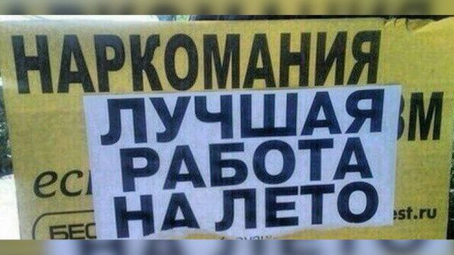
Я для себя так это объясняю: людям под наркотиками вроде мефедрона очень нравится именно такая музыка. То есть формат у большой части людей такой, что они приходят, упарываются и дрыгаются под техно. А те, что не употребляют, судя по всему, приходят поностальгировать или посмотреть на других наркош. Никто внутри не знакомится друг с другом, тут другое целеполагание.
Я вообще в этом семестре пообщался с несколькими людьми, которые употребляли/употребляют наркотики, и еще раз убедился, насколько это все плохо. Я даже на одном примере увидел контраст До/После, и это просто ужас, насколько люди меняются в худшую сторону. У меня нет медицинского образования, но как будто из-за употребления у людей буквально разрушается мозг и в норму не приходит.
Концерты. Часть 2
9) 9 апреля Кишлак Нижний Новгород. Поехал за любимым исполнителем в Нижний Новгород. Мою любовь к Кишлаку не описать одним абзацем, для этого нужно писать целый пост. Мы поехали туда с моим хорошим другом Андреем Павловым на целый день. Погуляли по Нижнему Новгороду, убедились в красивой нищете города. Поездили в каких-то автобусах на окраину города в музей паровозов. Сходили в художественный музей.
Еще на том концерте сделали предложение девушке. Я бы тоже так хотел сделать, но только если моя девушка будет любить Кишлака. У нас была випка и я с этой випки скидывал надутый гандон. Спасибо Андрею за пожертвованный гандон.
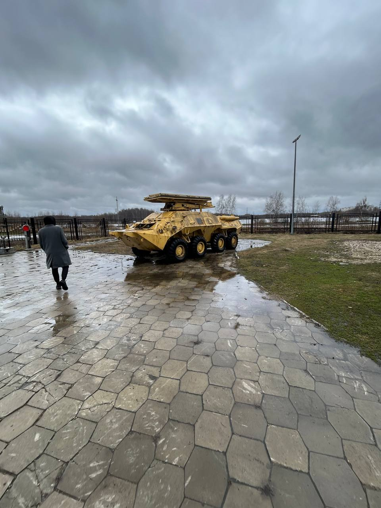
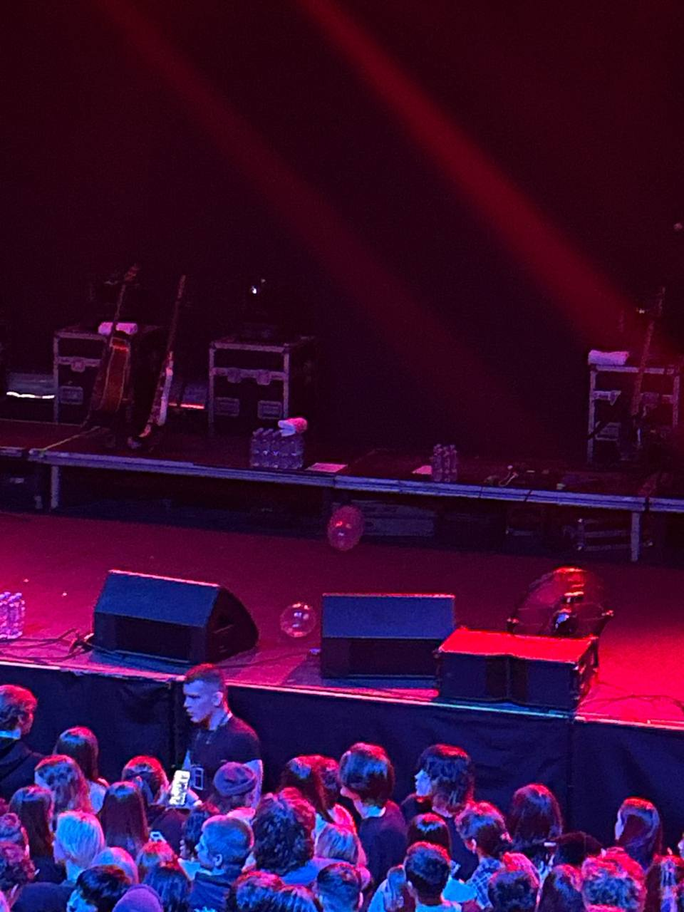
10) 19 апреля Tewiq Москва. Не самый большой фанат тевика, но концерт был в интересном месте: на метро Тушинская (площадку не вспомню, но и фиг с ней). Прикольный концерт был, мне понравился.
11) 3 мая grillyazh Москва. Здесь у меня был Meet&Greet. Концерт был в Urban на Дмитровской. Марат Грильяж очень крутой чувак, варился в академической среде и потом начал писать музыку. У него относительно маленькая core аудитория и очень много чуваков, которые слушают фиты просто, но не самого исполнителя. То есть я мало людей встречал, которые прям по Грильяжу текут. Хотя у меня вот Грильяж в моменте был топ3 любимым исполнителем и я много его слушал. Мне нравятся почти все его треки. Я забыл забрать плакат, который он мне подписал (но и хуй с ним).
Там я еще познакомился с чуваком, который «продал родителей за митку». Чувак-сирота потратил там большую часть своей выплаты для сирот на эту митку. Рассказал мне забавную историю, как весь день на дурке 18 января бухал, потом выебал какую-то девку в туалете без гандона. Вспомнил об этом только потому, что она ему потом написала на следующий день. Короче забавно было, я там с исполнителями другими пообщался. Остались фотки с f0lk.
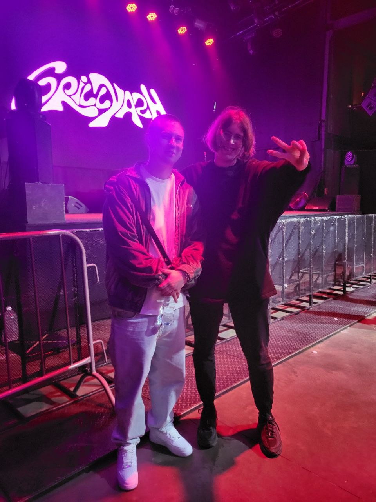
Давайте дальше коротко:
12) 10 мая 17seventeen Москва. Ходил туда тоже с Андреем. И в тот день я страшно нахуярился (особенно после концерта). Я выпил 8.5 сидров. Концерт был кайфовый, материалов почти не осталось (я скидывал видос в канал).
13) Лофт 24 мая. Крутой лофт был тоже, который изначально был задуман на «много людей», но много людей слилось. Был еще кейтеринг (отличительная черта лофта).
14) 31 мая Летник Москва. Здесь было забавно, что мой друг Тимофей забыл паспорт и мы пустили его по паспорту нашего другого друга. Хорошо, что проверка паспорта была только в одном месте, и мне удалось выйти и войти через эту зону, чтобы пронести паспорт и не отстаять очередь два раза.
15) 2 июня группа Cupsize Москва. Был небольшой концерт, в клубе Кристалл. Кристалл в интересном месте расположен, но там душно было. Там еще были хуесосы-охранники, которые не пустили меня из-за того, что увидели меня с сидром. А я выпил совсем мало, так еще и на концерты же всегда пускали тех, кто пил. Я вызвал ментов туда, но в итоге через много времени договорились с охраной. Менты, судя по всему, не собирались приезжать быстро (у них и так перегруз по работе). Короче было очень неприятно, но в конце Cupsize вытащил очень много народу на сцену и был вайб (первым вытащил Мишу Абульфата).
16) 28 июня Самый Лучший День Москва. Это был прикольный фестиваль, самая смешная часть была в начале: Тимофей забыл паспорт дома и уже думал поехать домой. Идти без Тимофея было бы очень грустно, так что мы провернули такую схему: взяли паспорт другого нашего друга, который уже прошел, а затем я вышел с этим паспортом (благо билеты еще не проверили в этой зоне) и Тимофей прошел по чужому паспорту.
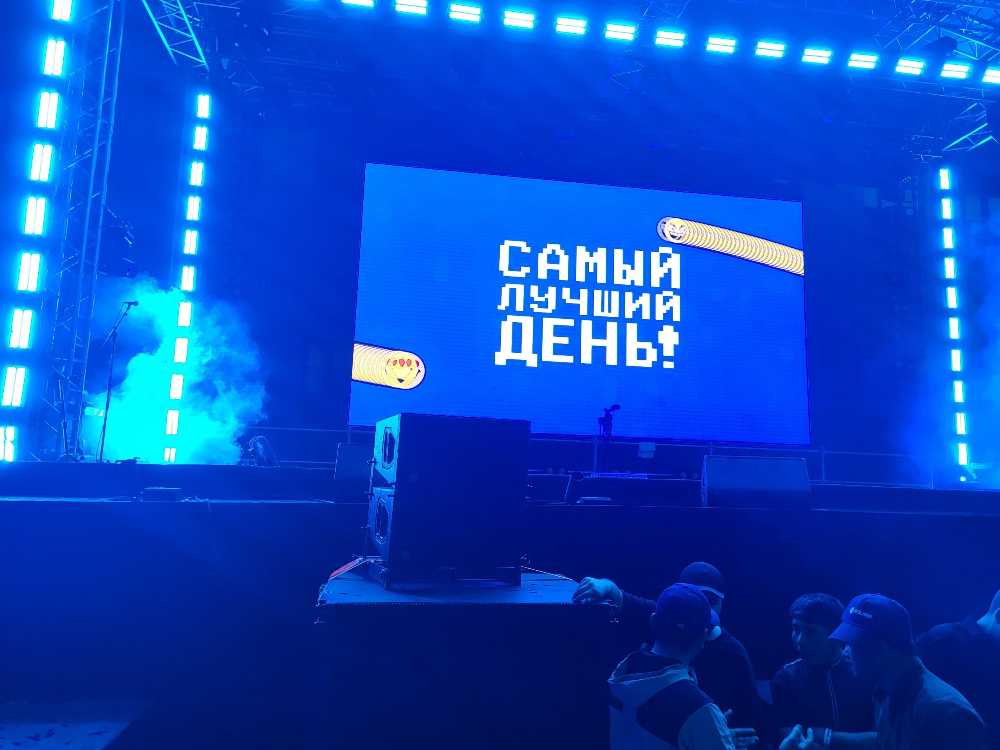
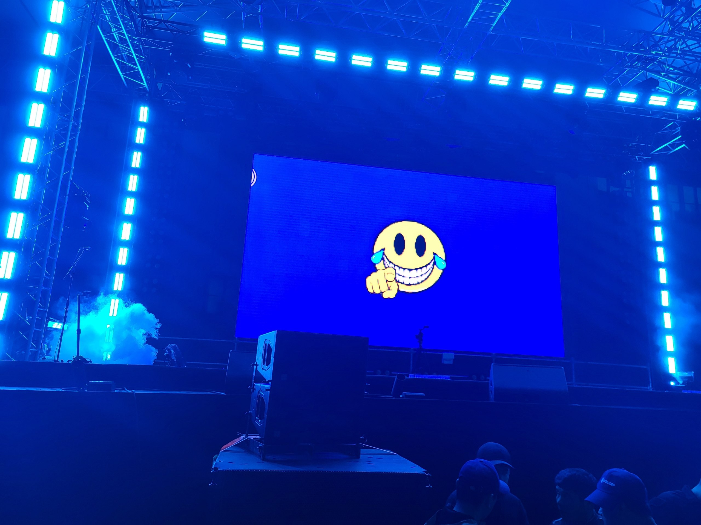
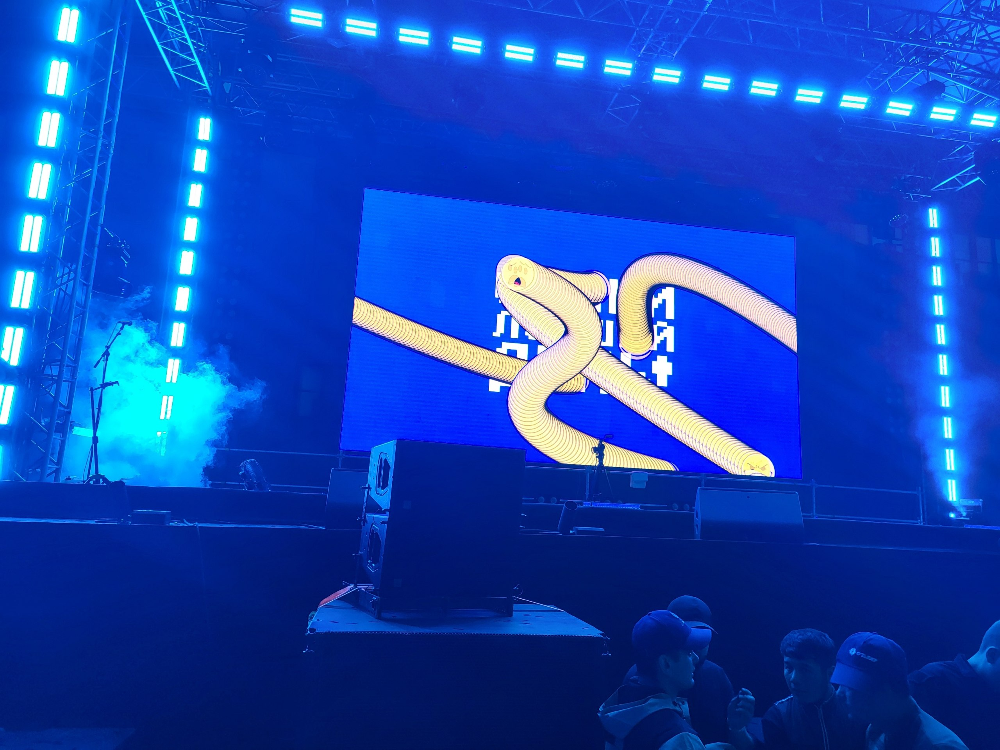
Как все продолжалось. Часть 2
В начале марта у меня была командировка с коллегами в Сочи. Это была забавная поездка: коллеги приехали для того, чтобы кататься на лыжах, я приехал, чтобы потусить в Сочи и съездить в Хадыженск.
Было необычно оказаться в Сириусе не в роли школьника в детском лагере, а в роли туриста. Если честно, я очень скучаю по временам, когда можно было со всеми друзьями куда-то поехать на почти месяц и жить в постоянном контакте. Да и Сириус сам по себе был хорошим и комфортным местом.
В Сочи было забавно, что там очень большую часть времени была активна беспилотная опасность или ракетная опасность. Пару раз прямо близко работало ПВО. Забавная деталь про ПВО: оно может сработать в нескольких километрах, а ощущение будет, что намного ближе. Тут я еще вспомню, как через пару месяцев я проснулся ночью от взрывов ПВО уже в Москве. В Сочи я воспринимал это как забавный нюанс, а вот в Москве было страшно проснуться от такого. Самое обидное, что я не смог нормально сходить в Сочипарк из-за этого: аттракционы выключали при беспилотной опасности, придя туда, я смог прокатиться только на одном аттракционе и потом все выключили.
В Хадыженск я съездил, но там я в основном учился и работал. Ниже фотка кошки Маруси.
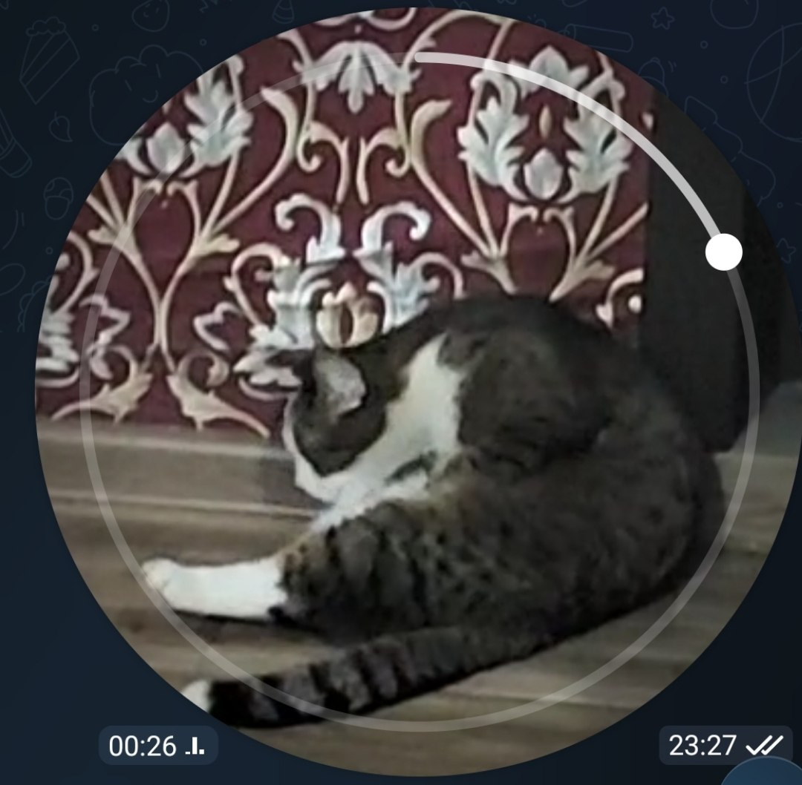
В начале марта я все еще держался нормально. Хочу рассказать еще один интересный сюжет, который случился с моим другом где-то в январе-феврале. Друга зовут Илья, мы с ним дружим уже очень давно (со времен 6-7 класса где-то, так как ходили в бассейн вместе). Для меня вообще бассейн веет приятными воспоминаниями. Это место, в которое я стабильно ходил сквозь очень разные жизненные периоды и где я немного преуспел.
И вообще удивительно, что с Ильей мы продолжили как-то держать связь даже после того, как он выпустился из школы (он на два года старше). Потому что обычно в таких местах, где сборная солянка разных людей, редко находились люди, с которыми мне бы потом было интересно держать контакт. А Илья был не бездарем, хоть и в каких-то своих направлениях, а еще он был самым быстрым школьником в бассейне (среди тех, которые занимались не профессионально). Я не помню точно его лучшее время, но я плавал 50 метров в лучшее время где-то за 29.5 секунд, а Илья вроде бы выплывал из 27 секунд (на второй взрослый разряд) и 100 метров на первый взрослый разряд плавал.
Сама история очень по сути очень краткая: Илью отчислили из Финансового Университета за непосещаемость на четвертом курсе... Не то чтобы меня эта история сильно шокировала, но как пример «и такое бывает» я ее запомнил. У Ильи сейчас все хорошо, он живет в Казахстане, он даже справился сняться с воинского учета и тем самым не нарушает закон. Но на самом деле мне его безумно жалко, он должен был уехать учиться в Америку в магистратуру, а тут еще один год проебался. Еще была смешная история, как он набрал 600 тысяч кредитов на времяпрепровождение с девушкой (слава богу, что с той девушкой он расстался и все закрыл).
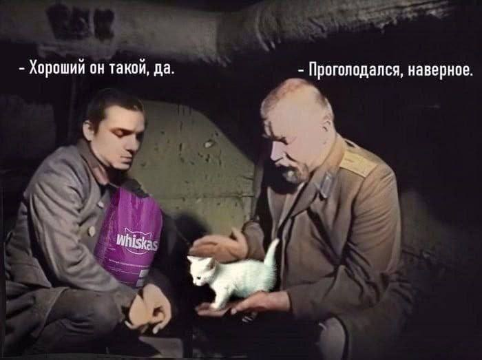
Рефлексия над безумными родителями и тяжелым детством
Теперь реально грустная история. Дима Трушин — легендарный преподаватель на ФКН, человек, который с душой относился к своей работе. Это человек, к которому можно было подойти с любой проблемой и получить как минимум дельный совет, а как максимум реальную помощь.
По моим ощущениям, к Диме тянулись либо очень интересные люди, либо своеобразные люди, у которых очень непростой бэкграунд. Я это связываю с тем, что у Димы самого было тяжелое детство, да и вся последующая жизнь тоже была не сладкой (хотя, наверное, много хорошего у Димы было). Я с ним не общался настолько много, не мог посещать все консультации, не могу сказать, что сблизился с ним (а хотел бы быть хотя бы хорошим знакомым, все-таки Дима очень интересный человек).
И все-таки есть какая-то корреляция между эпатажностью человека и его прошлым. А еще люди с даже отдаленно похожими друг на друга проблемами все-таки часто тянутся друг к другу. Наверное, поэтому я тоже тянулся к Диме, хотя у меня в сравнении было все намного сильно лучше.
Я немного переживаю, что расскажу лишние подробности здесь, но вкратце: одна из студенток, которая общалась с Димой, решила выпилиться. Там была своя предыстория, что ей в какой-то момент стало плохо (психическое здоровье) и ей надо было по медицинским причинам брать академ.
Ее родители очень сильно саботировали академ и терроризировали ее за это. В день, когда должен был быть финальный медицинский осмотр (вроде консорциум врачей или что-то такое), чтобы дать медицинское подтверждение о необходимости академического отпуска по состоянию здоровья, ее мать его отменила. Насколько я понимаю, это стало финальной каплей, после которой у нее щелкнуло в голове.
Она начала звонить людям, чтобы попрощаться, и, когда Дима узнал об этом, он уведомил ее родителей, чтобы они не дали ей сделать это. Найдутся люди, которые скажут, что она сделала это для «привлечения внимания». Я им отвечу, что она уже лежала в коме и это была не первая ее попытка. Если таких людей и такой аргумент не убедил, то я просто рекомендую таким людям сходить нахуй.
Родители после такой хуйни решили искать виноватых. Себя они винить не хотели (хотя trust me, именно их поведение привело к такому настоящему) и решили сделать виноватым Диму. Они написали заявление в полицию на Диму и также написали в ВШЭ жалобу (о склонении к суициду и всех смертных грехах).
В полиции в разбирательствах прошлой попытки самовыпила этой студентки вели следствие относительно Димы и ничего плохого не нашли на Диму (наоборот, на самом деле Дима помогал как мог). Кажется, что поэтому в этот раз Диме даже не позвонили на долгий период.
А в ВШЭ руководство начало свое расследование по Диме, потому что они не могут просто проигнорировать такое тяжелое обвинение. И это был шанс для нашего декана под шумок уволить Диму, которого он, судя по всему, очень сильно не любил. Много людей запереживали, когда узнали, и поэтому у независимых людей возникли мысли о том, чтобы собрать подписи в поддержку Димы Трушина.
Но в итоге сильнее всех ультанул Игорь Маркелов: он организовал двухдневный сбор подписей в пользу Димы. Я в тот день тоже независимо поехал в вышку, чтобы помочь собирать подписи, и в итоге почти сразу увиделся с Игорем. Мы тогда сели в первый день прямо у дверей учебного офиса. Через небольшое время пришла женщина учебного офиса и сказала нам идти в другое место. В итоге мы ушли в коворкинг ФКН в корпусе S. Это было 2-3 апреля, и на тот момент я понял, что не хочу совсем ничего делать, связанного с работой. Поэтому я взял отгул на эти дни и оба дня сидел на сборе подписей (хотя, конечно, я скорее просто саппортом был).
Мы собрали 350 очных подписей и 215 онлайн подписей. В итоге Диму Трушина все равно уволили. Там неприятная история с тем, что Диму вызвал «поговорить» декан, Дима наговорил хуйни, а декан слил запись разговора. Дима на самом деле нарушал некоторые правила ВШЭ, не связанные с ситуацией с самовыпилом студентки. 3 апреля во второй день сбора подписей уже в конце дня Дима пришел в свой кабинет в вышке, и мы небольшой компанией пошли с ним общаться. Диме от этой всей ситуации было очень херово. В итоге наш декан пришел нас разгонять из кабинета Димы, но мы как-то отдефались (потому что у многих из нас были курсачи у Димы).
Как все продолжалось. Часть 3
Я в заключении истории с Димой хочу вспомнить, что декан факультета — это избирательная должность. Но избирают его не прям все, а какой-то ограниченный круг лиц. Мне кажется, что после такой истории декана не должны переизбрать, но посмотрим, что будет, может быть, там все травоядные сидят. То, что дальше было с Димой, наверное, сейчас неважно и это незаконченная история (во всяком случае, я так вижу). Была символичная последняя пара Димы Трушина, когда в поточной аудитории не хватало мест, и люди сидели на ступеньках и очень долго хлопали Диме в конце.
Вечером того же дня, 3 апреля, я должен был писать тренировку к ICPC вдвоем с Ильей примерно с 19 до 24 часов. Мы что-то как-то написали, но в конце мне просто стало физически плохо и, кажется, мы не дописали тур до конца. Я пришел в полный упадок от всего, что со мной происходит: учеба, работа. Мне хотелось ходить на пары в вышку и бухать в клубах, а не сидеть на каторге, на которой мне было неинтересно и за мало денег.
Я не мог заставить себя уже даже не только работать, но вообще ничего другого делать. В те дни пиком моей продуктивности было посмотреть одну лекцию за день и больше ничего не получалось делать осмысленного. Хотя на самом деле 1-2 лекции за день на разбор — это может быть много, если лекции сложные. А мне все еще надо было делать домашки и все такое.
Я понял, что я не вывожу, и 4 апреля (это был выходной день) написал своему руководителю, что хочу уволиться и нам надо обсудить даты. Он на следующей неделе выходил в отпуск, но я как-то не проследил за этим. Тем не менее в следующий понедельник мы с ним созвонились и обсудили. Он сделал мне предложение, от которого мне тяжело было отказаться: выйти на 20 часов на несколько месяцев.
И я согласился выйти на 20 часов и не уволился (что в итоге продлило мою работу в Яндексе до августа, а теперь я все равно увольняюсь и ухожу в Fast Forward. О Fast Forward я расскажу когда-нибудь сильно позже). С того момента мне начало потихонечку легчать. 20 часов — это три дня работы. Еще четыре дня в неделю были свободными для остальных активностей, но многие из них я поначалу просто пролеживал на кровати или какими-то бесполезными занятиями.
Но тем не менее у меня начало хватать силы на то, чтобы продолжить справляться с учебой. Я тогда хорошо закрыл колоквиумы по функциональному анализу и основам матричных вычислений, очень горжусь этим. Для меня это доказательство, что несмотря на нейросети я все равно некоторую пользу от этих курсов получил в виде абстрактного прокачивания мозгов.
Как все подходило к концу
Я продолжил иногда посещать клубы и концерты. Мое любимое место — это Ровесник. В первый раз я там побывал на концерте капсайза еще очень давно, но как в клуб я туда пришел только в этом семестре. Там очень приятная аудитория из студентов-неформалов московских вузов, очень много людей из ВШЭ, но не только. Да и не только нефоры там есть, справедливости ради.
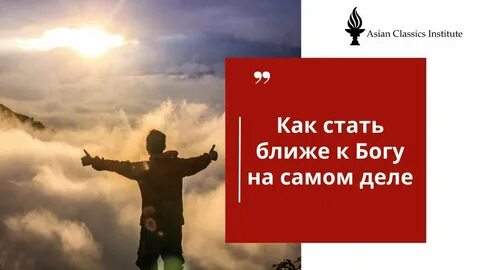
К концу полугодия я уже очень устал даже от учебы. Когда я увольнялся, я поставил себе цель нормально дозакрыть предметы по учебе, но по итоге в каком-нибудь матстате все свелось к тому, чтобы набрать 3.5. Благо за первые несколько месяцев я уже успел накопить оценки и мне надо было сделать не очень много. По некоторым предметам, например, даже вышли нормальные оценки: в функане, хорошо поработав первые полсеместра, можно было получить 10 (потому что контрольная и колоквиум были по первой половине курса). Я получил за функан 8. За АКОС2 я получил 10. За матрички еще имею шанс тоже хорошую оценку получить после пересдачи.
29 мая вышел альбом группы Cupsize с названием «заставь меня плакать», и он вообще сносил мне крышу. И я тогда решился на то, что очень давно хотел сделать: покрасить волосы в яркие цвета. Тогда я выбрал себе зелено-розовый цвет.
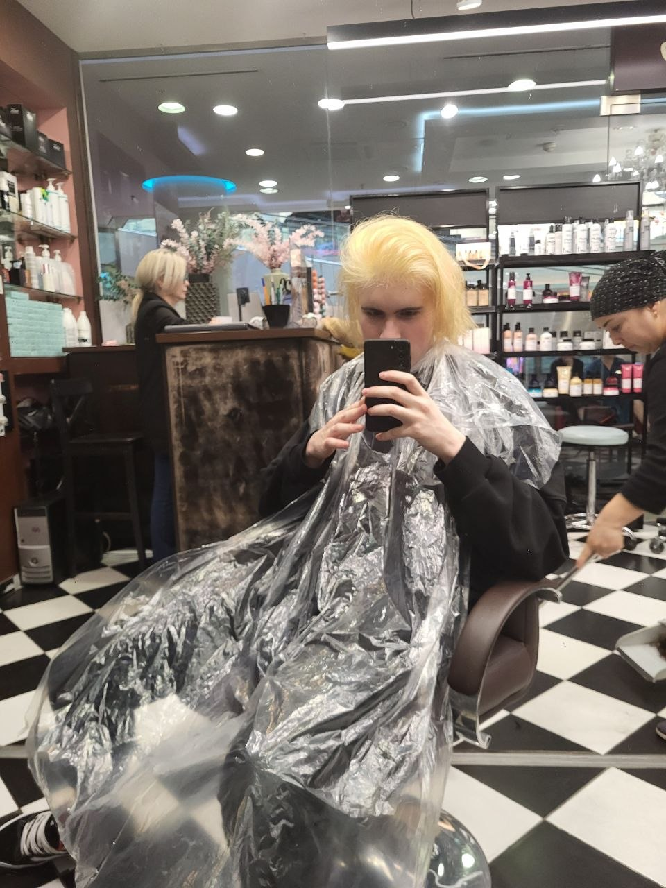
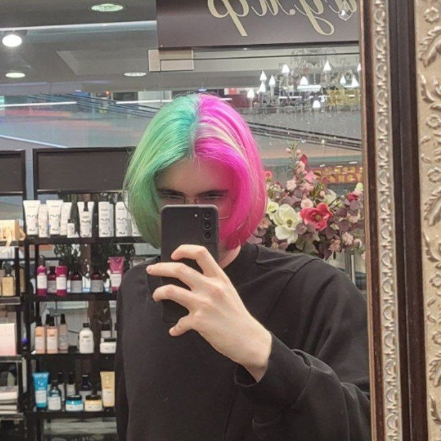
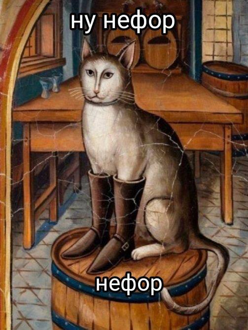
В июне я предпринимал последние усилия, чтобы просто закрыть учебу. Как и во втором семестре, я уже очень сильно выдохся к концу, но надо было дожимать, и я дожал. Матрицы не стал дожимать намеренно: решил уйти на пересдачу, чтобы лучше заботать предмет летом. Я понял про себя плохую вещь: если на меня будет давить дедлайн по учебе, я скорее просто закрою его нейронкой вместо того, чтобы делать сам. Поэтому я понял, что в будущем мне не стоит брать такую большую нагрузку, которая еще и не бьется с моим направлением работы. Наверное, я все-таки буду брать еще математику: я хочу пройти диффуры, пройти качественно комплы и какую-то другую математику еще точно. Но не все сразу, намного качественнее получается учиться, когда находишь силы делать это в свободное время, но полностью сам.
Напоследок расскажу, как я бухал пару дней с девушкой по имени Ульяна. Это было в конце июня, я гулял где-то по парку Горького и со мной познакомилась какая-то девушка. Я не могу сказать, что она мне сразу как-то сильно понравилась внешне, но всегда приятно, когда с тобой знакомятся, поэтому пошел с ней общаться.
Мы пообщались, обменялись контактами и после этого два раза ходили гулять: один раз почти на весь день, другой раз на всю ночь. Это был первый раз в жизни, когда я пил весь день. Так делать, конечно, не надо, но было забавно. Ульяна оказалась удивительным персонажем.
Это тот самый человек, который живет как карта ляжет. Она работает текильщицей в Перми (и живет там же, а в Москву приехала со знакомым, с которым познакомилась в чат-рулетке). Я послушал кучу историй формата, которого я люблю: про повесившегося отца, про подругу, встречающуюся с наркоманом (и залетевшую от него, но получился выкидыш), про опыт наркотиков (я осуждаю на самом деле, не пробуйте это говно никогда). Хотя Ульяна и пробовала вещества, но она утверждала, что ей не понравилось и алкоголь намного лучше.
Она, как сама это назвала, «числится» в медицинском вузе и каждую неделю по работе ходит в клубы. Я не представляю, как она вообще может жить в таком формате, но мне было очень интересно с ней пообщаться.
Я очень рад, что смог не отчислиться из вуза, получить какую-то пользу, не пропал где-то и не умер. Дальше будет лучше.
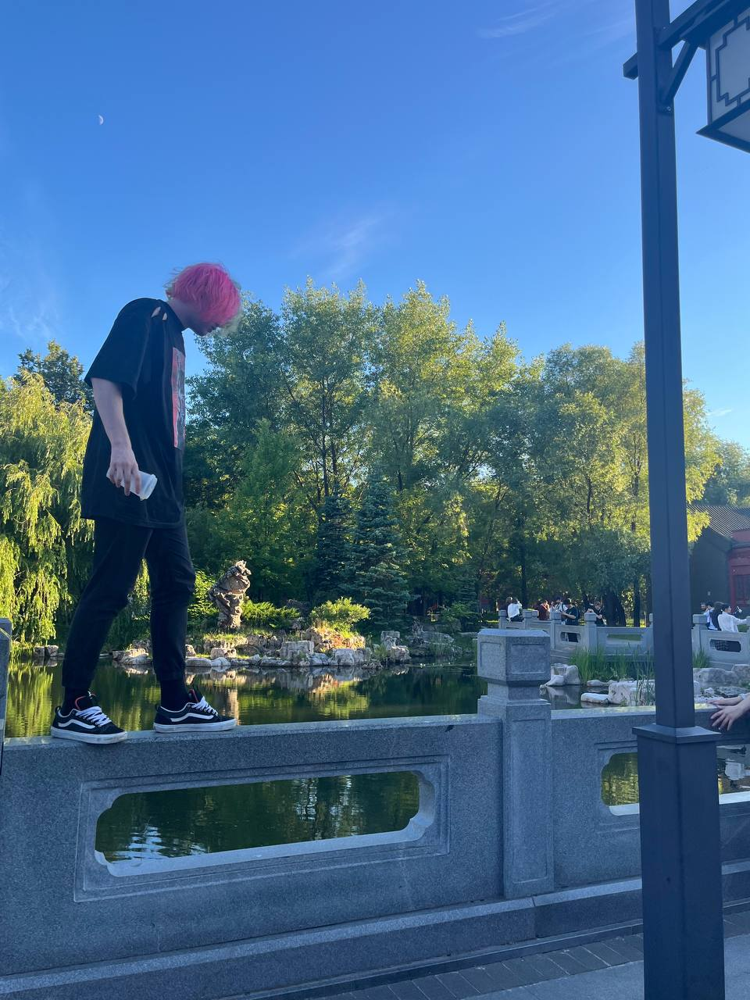